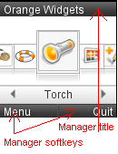
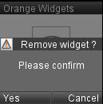
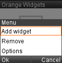

Browser.sendMessage ('Board', 'PROGRESS', progress);
This page describes the Manager VRML scene used on Tiny Mobile Widgets project.
For optimization reasons Manager scene centralizes title and softkeys treatments
that would have been done on each scene otherwise.
To communicate with each scene that wants a title or softkeys or whatever,
Manager use Message node.
Softkeys, titles, popups and menus are usually managed in each VRML scene that need them.
In Tiny Mobile Widgets project, we knew that each scene will need at least a title
and softkeys. And the goal of this project was to optimize the VRML source code.
So we decided to put title and softkeys once and for all on a scene dedicated to
manage them. It is called Manager.wrl and it communicates with the other
scenes by Message (to display the
title/softkeys and to spread click events).
For same reasons, we also add popups (Alert, ProgressBar) and menus to Manager abilities.
An application can use different types of Messages for different events/features. It is like TV channel. The scene that shall receive the message set a key as url parameter of Message Node. In manager, the key is 'Board'. So, all scene that want to communicate with Manager (matters of title, softkeys, popups, menu or loading scene) use the 'Board' channel.
This is the standard use of Message with manager :

Browser.sendMessage ('Board', 'INIT', 'Mobile Widgets', 'Menu', 'Quit');
Respectively : Alert, ProgressBar and Menu :

Browser.sendMessage ('Board', 'POPUP', 'Remove Widget ?', 'Please confirm', 'Yes', 'Cancel', 'warning');
Browser.sendMessage ('Board', 'PROGRESS', progress);

Browser.sendMessage ('Board', 'MENU', 'Menu', 'Ok', 'Cancel', 'Add widget', 'Remove', 'Options', '');
Read 'Board' channel chapter for more information.